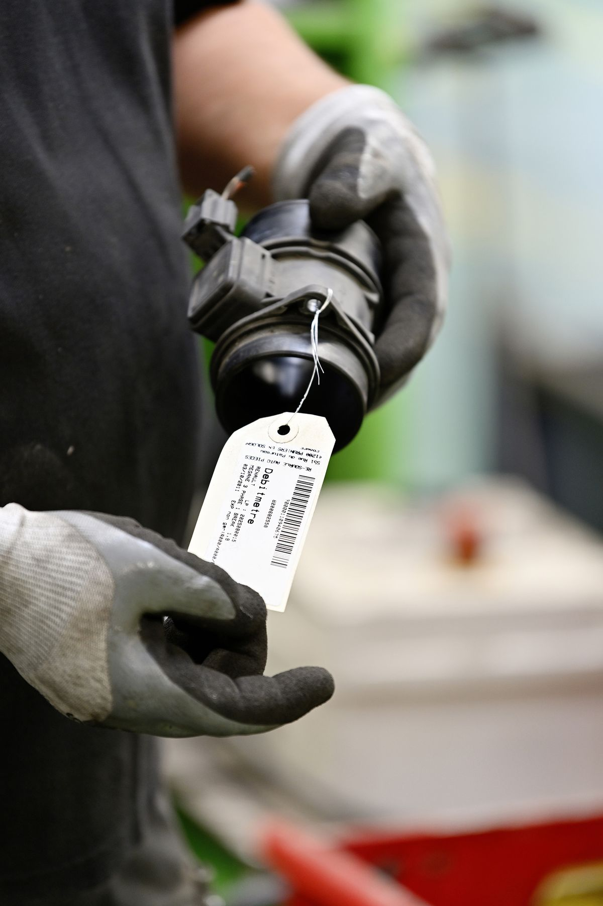
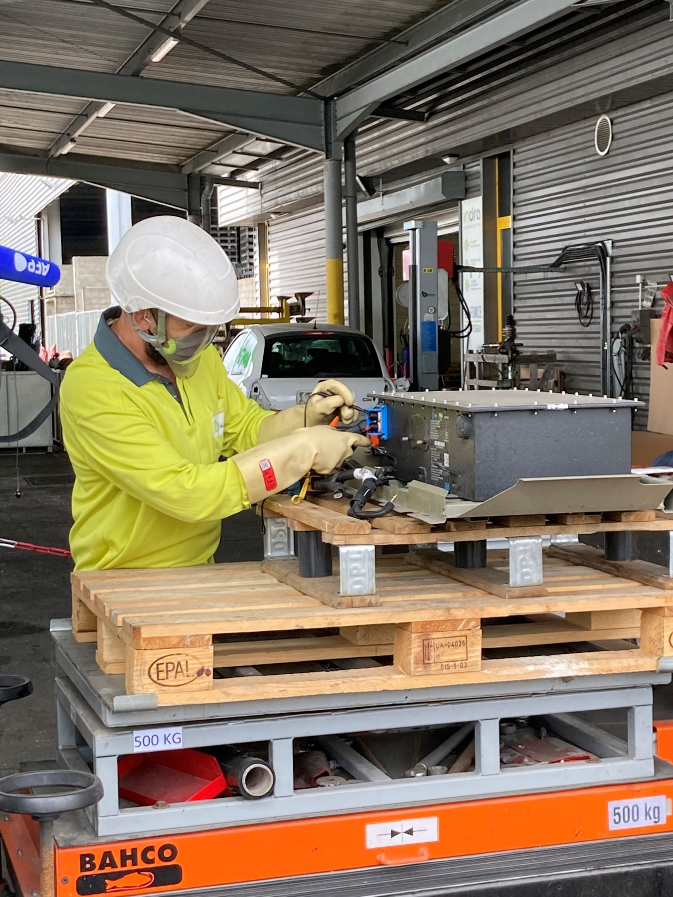
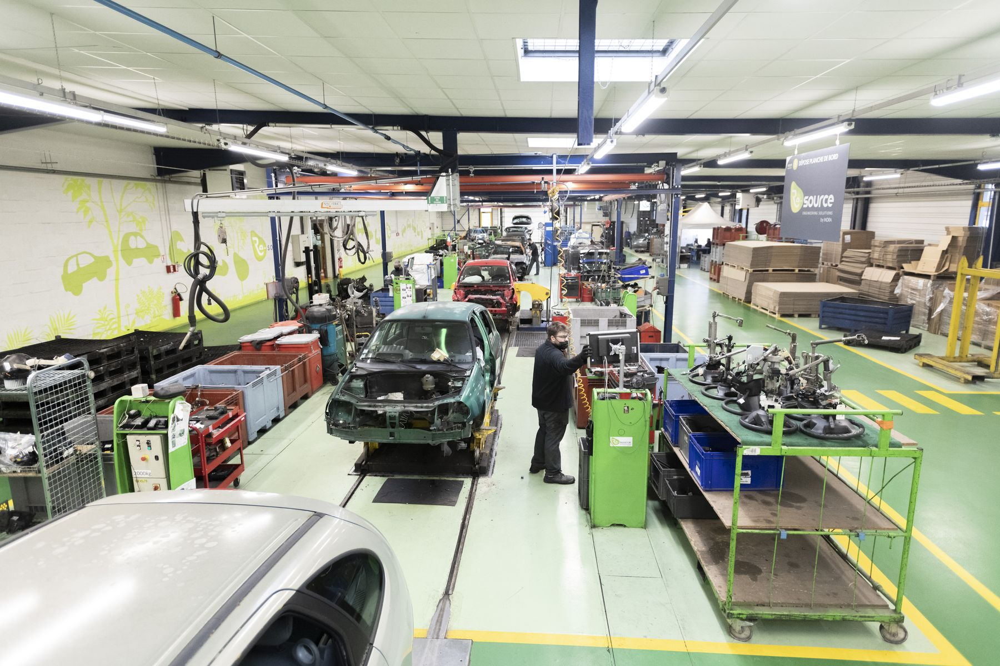
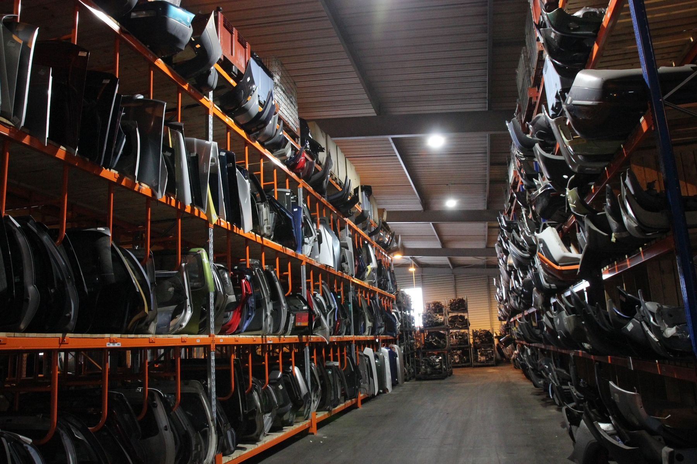
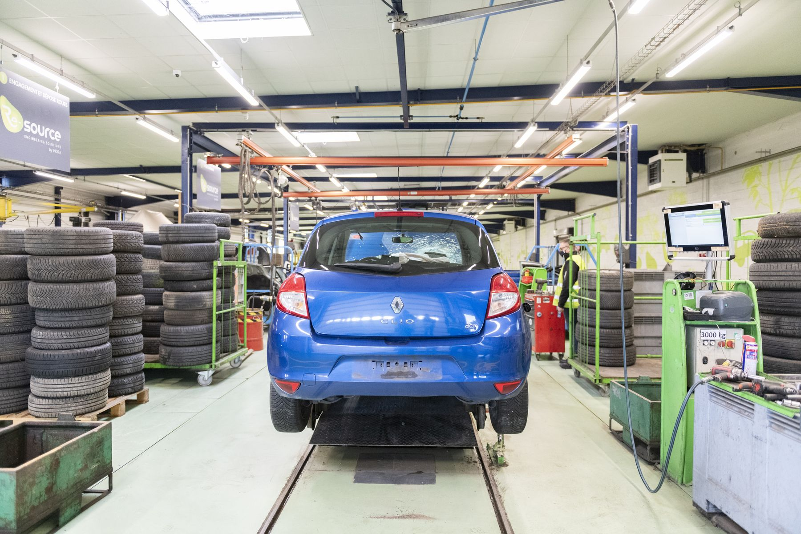

Une porte d'entrée par métier
Ce qu'INDRA fait pour vous.
Assureur, constructeur, centre VHU, réparateur, collectivité ou particulier : chacun trouve sa preuve et son interlocuteur en moins de dix secondes.

Enlèvement partout, traçabilité sans faille
Maillage national et ultramarin, certificats de destruction, désimmatriculation SIV, plateforme SIRA, pièces de réemploi garanties pour réduire le coût des sinistres.
Découvrir
Vos obligations REP, tenues clé en main
Collecte gratuite, reprise, reporting réglementaire, batteries lithium-ion sécurisées, éco-conception et boucles matières fermées avec l'écosystème The Future Is NEUTRAL.
Découvrir
Rejoindre le 1er réseau français
Flux de véhicules garantis par les contrats assureurs et constructeurs, outils digitaux, formation AURECA, équipements Re-source, accompagnement réglementaire.
Découvrir
420 000 pièces de réemploi en stock
Trois gammes garanties de 6 à 12 mois, commande en ligne via Opisto, Precis et Digipiec, livraison rapide depuis nos 9 sites.
Découvrir
Destruction conforme, marchés publics
Certificats de destruction, traçabilité SIV, réponse aux appels d'offres, véhicules mis à disposition pour les exercices de secours.
Découvrir
Se séparer de sa voiture, gratuitement et légalement
Reprise 100 % dématérialisée, enlèvement sur rendez-vous, certificat de destruction délivré par un centre agréé.
Découvrir